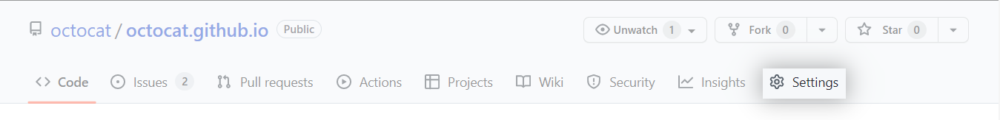

Demo
This demo walks through the creation of a model compatible with LUME-services tooling. You will:
- Create a GitHub repository for the demo model
- Build a templated project using
lume-services-model-template - Register your model using the LUME-services API and store deployment information into a MySQL database
- Run your model, storing results in MongoDB database
- Retrieve model results using LUME-services
Requirements:
- GitHub account and SSH keys installed according to their instructions.
- Docker desktop for launching the development environment
- Conda installation for the management of Python environments
- Either a DockerHub account or Stanford account to use the Stanford Container Registry provided by the code.stanford.edu effort.
Package a model
1. Create a repository for your project on GitHub
Using your GitHub account, create an empty repository named my-model (feel free to sub this with whatever you'd like).
2: Create project
Clone lume-services-model-template and navigate to repository:
git clone https://github.com/slaclab/lume-services-model-template
cd lume-services-model-template
Create your environment:
conda env create -f environment.yml
conda activate lume-services-model-template
Create your project. The -o flag indicates the directory where you'd like the resulting repo to be stored. For now, let's create it in the repo root:
cookiecutter template -o $(pwd)
Answer the prompts
author: <your name>
email: <your email address>
github_username: <your GitHub username>
github_url: <url of GitHub repo you've just created>
project_name: My Model
repo_name [my-model]:
package [my_model]:
model_class [MyModel]:
Select container_registry:
1 - DockerHub
2 - Stanford Container Registry
Choose from 1, 2 [1]:
2. Otherwise, enter 1 for DockerHub. Now, enter the username you use for the contaner registry:
container_username: <your registry username>
Use example variables file packaged with this repository. This requires the full path to the file as the hook runs in the root of the generated project and cannot reference the context of the execution directory.
model_config_file: /full/path/to/lume-services-model-template/examples/variables.yml
Cookiecutter will render a repository using the template with the structure:
my-model
├── Dockerfile
├── MANIFEST.in
├── README.md
├── _entrypoint.sh
├── conftest.py
├── dev-environment.yml
├── environment.yml
├── my_model
│ ├── __init__.py
│ ├── _image.py
│ ├── _version.py
│ ├── files
│ │ ├── __init__.py
│ │ └── variables.yml
│ ├── flow.py
│ ├── model.py
│ └── tests
│ ├── __init__.py
│ └── test_flow.py
├── pytest.ini
├── requirements.txt
├── setup.cfg
├── setup.py
└── versioneer.py
tree my-model
Now, navigate to the directory where you've created your repository:
cd my-model
3. Configure generated repo to use GitHub repo as the origin:
Replace username and brackets in the below command:
git remote add origin git@github.com:<your GitHub username>/my-model.git
git push --set-upstream -f origin main
Note: If your local git configuration defaults to creating a branch with name master, you'll have to rename the local branch to main using:
git branch -m master main
4. Set up model
Replace ellipses in the evaluate method of my_model/model.py with:
self.output_variables["output1"].value = np.random.uniform(
input_variables["input1"].value, # lower dist bound
input_variables["input2"].value, # upper dist bound
(50, 50),
)
self.output_variables["output2"].value = input_variables["input1"].value
self.output_variables["output3"].value = input_variables["input2"].value
Because we've introduced numpy as new dependency, add a numpy import to the top of the file so the model.py file looks like:
import copy
from typing import Dict
import numpy as np
from lume_model.models import BaseModel
from lume_model.variables import InputVariable, OutputVariable
from my_model import INPUT_VARIABLES, OUTPUT_VARIABLES
class MyModel(BaseModel):
input_variables = copy.deepcopy(INPUT_VARIABLES)
output_variables = copy.deepcopy(OUTPUT_VARIABLES)
def __init__(self, **settings_kwargs):
"""Initialize the model. If additional settings are required, they can be
passed and handled here. For models that are wrapping model loads
from other frameworks, this can be used for loading weights, referencing
data files, etc.
"""
super().__init__()
# handle settings if any
# if settings_kwargs is not None:
# ...
def evaluate(
self, input_variables: Dict[str, InputVariable]
) -> Dict[str, OutputVariable]:
"""The evaluate method accepts input variables, performs the model execution,
then returns a dictionary mapping variable name to output variable.
Args:
input_variables (Dict[str, InputVariable]): Dictionary of LUME-model input
variables with values assigned.
Returns:
Dict[str, OutputVariable]: Dictionary of LUME-model output variables with
values assigned.
"""
self.output_variables["output1"].value = np.random.uniform(
input_variables["input1"].value, # lower dist bound
input_variables["input2"].value, # upper dist bound
(50, 50),
)
self.output_variables["output2"].value = input_variables["input1"].value
self.output_variables["output3"].value = input_variables["input2"].value
return self.output_variables
Add numpy to the dev-environment.yml, environment.yml, and requirements.txt files.
5. Set up flow
In order for our flow to run, we must edit the code in my_model/flow.py. First, delete the preprocessing_task code, as we won't be using it. Second, edit format_file such that the file holds a string representation of the sum of output2 and output3.
@task(log_stdout=True)
def format_file(output_variables):
text = str(output_variables["output2"].value + output_variables["output3"].value)
return text
6. Create development environment
Now, create an environment for working with your model package:
conda env create -f dev-environment.yml
conda activate my-model-dev
Install your package into this environment:
pip install -e .
7. Set up tests
In my_model/tests/test_flow.py modify the test_flow_execution function, adding the tmp_path fixture to the signature and passing filename=f"{tmp_dir}/test_file.txt" and filesytem_identifier="local" to the run method. The resulting code should look like:
def test_flow_execution(tmp_path):
flow.run(filename=f"{tmp_path}/test_file.txt", filesystem_identifier="local")
Navigate back to your my-model directory. You can now test your flow locally by running:
pytest .
8. Run tests with GitHub actions
Check in all of your code, and push to GitHub.
git add .
git commit -m "Check in formatted repo"
git push
In your browser, navigate to your GitHub repository at https://github.com/<your GitHub username>/my-model/actions. The testing workflow configured in .github/workflows/tests.yml will run automatically on pushes to your main branch and you can monitor the success of these tests from the GitHub actions console for the repo. The workflow tests your package against a matrix of Python versions (3.7, 3.8, 3.9) on the latest Ubuntu build. You can expand this matrix if desired using GitHub actions matrix options.
9. Configure GitHub actions build
Stanford Container Registry
SLAC users can take advantage of the Stanford Container Registry to store their containers. The steps for configuring your project to use the registry are as follows:
9.1 Create an API token at https://code.stanford.edu/-/profile/personal_access_tokens. For Token name enter My Model. Optionally choose an expiration date. This can be whatever you'd like, but the GitHub action secret defined in step 3. will need to be updated with a new value after this expiration. Record this API token for use in steps 9.3 and 9.4.
9.2 Create a project using Stanford Code. In the Project name field, write My Model. Select internal visibility level.
9.3 Add the token to your GitHub repository secrets. Navigate to your repository settings. In the left sidebar, click Secrets, Actions, then New repository secret. Type SCR_PAT into the name, and your generated API key into the value. Repeat this process to set a secret named STANFORD_USERNAME to your Stanford username.
9.4 Login to the container registry on your machine.
Replace the <> with the appropriate values:
echo <your token> | docker login --username <your Stanford username> --password-stdin http://scr.svc.stanford.edu
DockerHub
The LUME-services model template is pre-configured to publish the container image to DockerHub. In order to use this workflow, authentication for the repository must be configured using GitHub secrets.
- Navigate to the settings on your repository.

- In the left sidebar, click
Secrets,Actions, thenNew repository secret. TypeDOCKER_USERNAMEinto the name, and your DockerHub username into the value and clickAdd secretto save. Repeat this process to create aDOCKER_PASSWORDsecret with your DockerHub password as the value.
10. Create a release
Create a tagged release for your model. Navigate to https://github.com/<your GitHub username>/my-model/releases -> Draft a new release
Under choose tag, type v0.0.1 (this is a development tag, semantic versioning for releases formally starts at v0.1). You can enter the same for the title and may enter some description, but this is optional. Check the pre-release box at the bottom of the page and click the button to publish your release.
The release will trigger a GitHub action workflow for your project, which you can monitor at https://github.com/<your GitHub username>/my-model/actions. Once the build completes, your image will be available at https://hub.docker.com/u/<your DockerHub username> or https://code.stanford.edu/<your Stanford username>/my-model/container_registry.
Deploying a model to production:
The below steps mimic a production deployment workflow.
11. Start services with docker-compose
LUME-services is packaged with a command line utility for launching the development environment, a docker-compose application with all services packaged and configurable via environment variables.
Create a new console window. If you haven't, clone the lume-services repository.
git clone https://github.com/jacquelinegarrahan/lume-services
lume-services repository and activate your environment.
cd lume-services
conda activate my-model-dev
Configure your environment variables.
source docs/examples/demo.env
If you are using the Stanford Container Registry, you'll have to set additional environment variables, you STANFORD_USERNAME and SCR_PAT from step 9.
export STANFORD_USERNAME=<your_stanford_username>
export SCR_PAT=<your PAT from step 9>
Next start up your services:
lume-services docker start-services
If you have existing services running on the ports defined in docs/examples/demo.env, you may need to edit the file to use free ports.
Once the console logs a message about passed health checks, you've started all services successfully. You can inspect the services using Docker Desktop:
And access the UI using your browser at http://localhost:8080.
12. Run the notebook and register your model
Create a new console window. Navigate to your local lume-services repository and activate your environment.
cd lume-services
conda activate my-model-dev
source docs/examples/demo.env
jupyter notebook docs/examples/Demo.ipynb